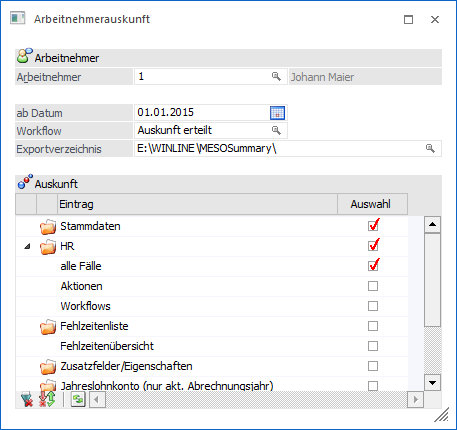
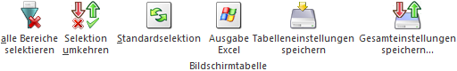
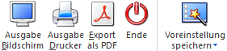

Im WinLine INFO über den Menüpunkt…
1 Info
1 Auskunftserteilung
1 Arbeitnehmerauskunft
… können für einen Arbeitnehmer alle Auswertungen, welche bereits in der Arbeiternehmerinfo zur Verfügung stehen, in einer einzelnen Liste ausgegeben werden.
Hinweis
Die Baumstruktur kann individuell im Menüpunkt "Einstellungen - Ansicht" angepasst werden. Die dort selektierten Einträge werden auch in den Auskunftsmenüpunkten herangezogen.

Ø Arbeitnehmer
Eingabe der Arbeitnehmernummer. Über die Matchcode-Funktion kann nach allen bereits angelegten AN gesucht werden. Abhängig davon, ob es sich um einen LOHN A oder LOHN D handelt, werden die jeweiligen AN vorgeschlagen.
Ø ab Datum
Eingabe des Datums für die Ausgabe der Daten. Hierbei wird abhängig vom Landeskennzeichen des Mandanten (siehe "FIBU-Parameter") ein Datum vorgeschlagen.
ü Mandant mit Landeskennzeichen
"Deutschland"
Wirtschaftsjahresbeginn abzüglich 10 Jahre
ü Mandant mit Landeskennzeichen
ungleich "Deutschland"
Wirtschaftsjahresbeginn abzüglich 7 Jahre
Hinweis
Diese Einschränkung gilt nur für die Ausgabe der CRM-Fälle.
Ø Workflow
In diesem Feld kann die Nummer jenes Workflows oder Aktionsschrittes angegeben werden, der bei der Auswahl des Buttons "Export als PDF" angestoßen wird. Um nach Workflows oder Aktionsschritten zu suchen, steht der Matchcode zur Verfügung.
Ø Exportverzeichnis
Erfolgt die Ausgabe auf PDF, dann wird die Auswertung in ein eigenes Verzeichnis abgelegt. Standardmäßig wird das Programmverzeichnis mit dem Unterordner MESOSummary vorgeschlagen. Dieses Verzeichnis kann über den Explorer-Button ausgewählt werden. Der angegebene Pfad wird für alle Benutzer gespeichert.
Bereiche
Die Informationen sind in folgende Teilbereiche gegliedert, welche über eine Baumstruktur angewählt werden können:
ü Stammdaten
ü HR
ü Fehlzeitenliste
ü Zusatzfelder/Eigenschaften
ü Jahreslohnkonto (nur akt. Abrechnungsjahr)
ü Arbeitnehmerkosten (nur akt. Abrechnungsjahr)
ü Pfändung
Ø Stammdaten
In diesem Bereich werden die Stammdaten des jeweiligen Arbeitnehmers angezeigt.
Ø HR
Der Bereich "HR" ist in 3 Ansichten unterteilt:
ü alle Fälle
ü Aktionen
ü Workflows
Hinweis
Es kann jeder Benutzer der CRM und DSVGO berechtigt ist alle Workflows und Aktionen sehen.
Ø Alle Fälle
In der Ansicht "alle Fälle" werden CRM Fälle der Typen "CRM Aktion" und "CRM Workflow" angezeigt, welche für den Arbeitnehmer erfasst wurden.
Ø Aktionen
In der Ansicht "Aktionen" werden CRM Fälle des Typs "CRM Aktion" angezeigt, welche für den Arbeitnehmer erfasst wurden.
Ø Workflows
In der Ansicht "Workflows" werden die CRM-Fälle des Typs "CRM-Workflows" angezeigt, welche für den Arbeitnehmer erfasst wurden.
Ø Fehlzeitenliste
In diesem Bereich werden - sofern vorhanden - die Fehlzeiten des aufgerufenen Arbeitnehmers angezeigt.
Ø Zusatzfelder/Eigenschaften
In diesem Bereich werden die Zusatzfelder und die Eigenschaften angezeigt, welche beim Arbeitnehmer hinterlegt worden sind.
Ø Jahreslohnkonto
In diesem Bereich wird das Jahreslohnkonto des Arbeitnehmers angezeigt. Dabei wird das Jahreslohnkonto nur vom aktuellen Abrechnungsjahr angezeigt, unabhängig der Datumsselektion.
Ø Arbeitnehmerkosten
In diesem Bereich werden die Arbeitnehmerkosten des Arbeitnehmers angezeigt, wobei nur die Monate berücksichtigt werden, für welche es auch Abrechnungen gibt. Dabei werden die Daten nur vom aktuellen Abrechnungsjahr angezeigt, unabhängig der Datumsselektion.
Ø Pfändung
In diesem Bereich werden alle Pfändungen des Arbeitnehmers angezeigt.
Tabellenbuttons

Ø alle Bereiche selektieren
In der Tabelle werden bei allen Zeilen die Checkbox der Spalte "Auswahl" aktiviert.
Ø Selektion umkehren
Durch Anwahl des Umkehren-Buttons werden alle Selektionen umgekehrt. Es werden somit alle selektierten Bereiche umselektiert, nicht selektierte Bereiche werden selektiert.
Ø Standardselektion
Durch Drücken des Buttons "Standardselektion" werden die Standardauswertungen bzw. Standardbereiche wieder aktiviert.
Ø Ausgabe Excel
Durch Anwahl des Buttons "Ausgabe Excel" wird der Inhalt der Tabelle an Microsoft Excel übergeben.
Ø Tabelleneinstellungen speichern
Die Spalten in der Tabelle können in der Breite entsprechend angepasst werden. Durch Anwahl des Buttons "Tabelleneinstellungen speichern" werden die Einstellungen benutzerspezifisch gespeichert und bei dem nächsten Aufruf des Menüpunktes wieder vorgeschlagen.
Ø Gesamteinstellungen speichern
Im Gegensatz zu "Tabelleneinstellungen speichern" können mit "Gesamteinstellungen speichern" mehrere Tabellenaufbauten gespeichert und nach Wunsch geladen werden.
Buttons

Ø Ausgabe Bildschirm
Mit Hilfe des Buttons "Ausgabe Bildschirm" oder der F5-Taste wird die Auswertung am Bildschirm ausgegeben.
Ø Ausgabe Drucker
Durch Anwahl des Buttons "Ausgabe Drucker" wird die Auswertung am Drucker ausgegeben.
Ø Export als PDF
Durch Drücken des Buttons "Export als PDF" werden die jeweils ausgewählten Bereiche als eine PDF-Datei in das eingetragene Verzeichnis exportiert. Dabei wird auch der ausgewählte Workflowschritt angestoßen und die PDF-Datei wird als Upload in den Workflowschritt abgestellt. Der Name der PDF-Datei setzt sich wie folgt zusammen:
ü EMP+Arbeitnehmernummer+Mandantennummer+Benutzernummer.PDF
Bei einer nochmaligen Ausgabe wird die bereits vorhandene PDF-Datei des Arbeitnehmers ohne eine Meldung überschrieben.
Ø Ende
Durch Drücken des Buttons "Ende" bzw. der ESC-Taste wird der Menüpunkt geschlossen.
Ø Voreinstellung speichern
Durch Anwahl dieses Buttons erfolgt eine benutzerspezifische Speicherung aller im Fenster getätigten Einstellungen. Diese sogenannten "Voreinstellungen" können jederzeit wieder abgerufen werden und ermöglichen dadurch ein schnelleres und zielorientierteres Arbeiten (nähere Informationen entnehmen Sie bitte dem Kapitel "Die Voreinstellungen").